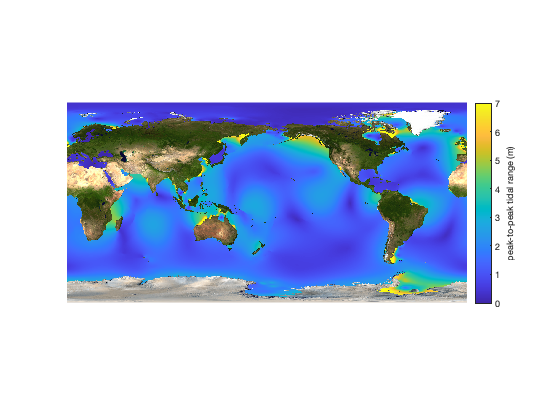
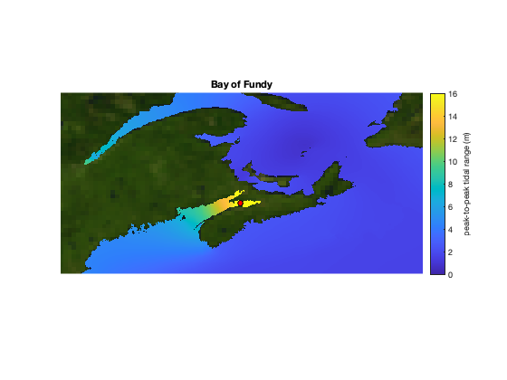
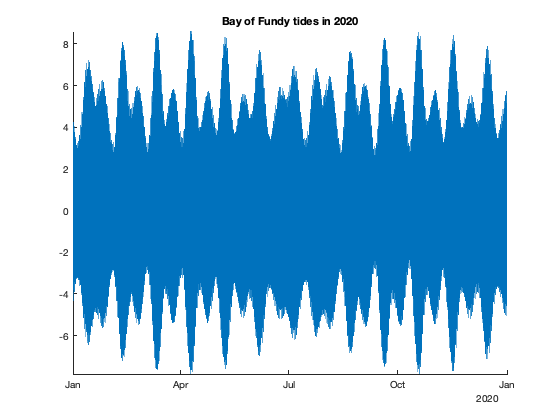

How to: Calculate tidal range
This page describes the surprisingly tricky problem of calculating the full range of tidal motion.
Contents
Method 1: Quick approximation
The quick-and-dirty approach to calculating tidal range is simply to add up the amplitudes of all of the constituents. For example, the TPXO9_atlas_v5.nc file contains 15 constituents that each oscillate as sinusoids of different frequencies. If we ignore the patterns of constructive and descrutive interference that occur when sinusoids of different frequencies are added together, we can say the peak-to-peak tidal range is 2 times the sum of the amplitudes of all of the constituents.
Below, we load a global cube of tidal height amplitudes of all constituents, then sum them. The earthimage function is from the Climate Data Toolbox for MATLAB and is purely optional.
% Load data (takes a few seconds for TPXO9) [h,lon,lat] = tmd_data('TPXO9_atlas_v5.nc','hAm'); ocean = tmd_data('TPXO9_atlas_v5.nc','mask'); % Peak-to-Peak tidal range: h_range = 2*sum(h,3); figure him = imagesc(lon,lat,h_range); him.AlphaData = ocean; axis xy image off caxis([0 7]) cb = colorbar; ylabel(cb,'peak-to-peak tidal range (m)') earthimage('bottom','centerlon',180) % optional
Minor constituents
In the example above, we've ignored minor constituents, which can add about 5 to 10% extra variability that isn't accounted for among the major constituents, so if you're trying to estimate tidal range as I've shown above, you might want to multiply h_range by 1.1 to account for minor constituents, although that won't capture all of the variability exactly.
The problem with the simple sum
In the example above, we've just summed the amplitudes of 15 constituents, multiplied that by two, and called it the peak-to-peak range. However, in reality, the sinusoids add together destructively at times, and so the simple sum of all constituent amplitudes can give the impression that tidal ranges are a little bit bigger than they really are. Consider this location in the Bay of Fundy, which boasts the biggest tidal range in the world:
% A spot in the bay: lati = 45.3333; loni = 295.533; % Zoom the previous map to the Bay of Fundy: hold on plot(loni,lati,'ko','markerfacecolor','r') axis([288.17 303.02 42.44 49.86]) title 'Bay of Fundy' caxis([0 16])
Using the h_range grid we calculated above, we can interpolate to get the full tidal range in the Bay of Fundy:
h_rangei = interp2(lon,lat,h_range,loni,lati)
h_rangei = 17.5664
17.6 m is slightly larger than the 16 m mentioned on the Wikipedia page for Bay of Fundy - Why might that be? Well, for one thing, I'm not entirely sure where in the bay the 16 m value was measured, and for another thing, it's unclear what exactly they mean by the full tidal range.
For context, let's plot the time series of tides at the location of interest. We'll plot an entire year of data at one-minute temporal resolution:
t = datetime('jan 1, 2020'):minutes(1):datetime('jan 1, 2021'); hi = tmd_predict('TPXO9_atlas_v5.nc',lati,loni,t); figure plot(t,hi) box off axis tight title 'Bay of Fundy tides in 2020'
Above, you see the pulsing of the fortnightly tides that dominate the overall envelope, but it's worth noting that not all two-week intervals look the same. The tides do not come close to their maximum or minimum values in all of January or February. That's because the timing of the peaks of all of the different sinusoidal constituents don't always coincide, so they interfere destructively. Also note that the prediction from the tmd_predict function infers an extra dozen or so minor constituents that aren't explicitly included in the TPXO9 model.
Here's the peak-to-peak tidal range from one year of the predicted time series:
hi_range = max(hi)-min(hi)
hi_range = 16.4655
That's a meter less than we calculated by the simple sum of major constituent amplitudes, because over the course of a year, all of the peaks of all of the constituents never coincide all at once.
Method 2: Slow and inelegant
Above, we saw how the simple sum of major constituent amplitudes provides a sort-of-okay-but-not-perfect estimate of tidal ranges. We'd get a more accurate solution if we could compute the time series for every single pixel, but that comes at a high computational cost.
TMD3.0 includes a semi-documented tidal_range function that calculates tidal range maps, including minor constituents, but I give you this warning that it is slow!
By default, the tidal_range function predicts tides at 30 minute intervals for a year. It can take several hours to run, and even still, it might not capture the full tidal range, for two reasons:
- Length of the solution: In the time series we plotted in the example above, it's fair to wonder, would the tidal constituents add together differently in a different year, and produce a slightly different tidal range? The answer is, probably, yes. So we must accept that the tidal range over the course of 2020 may not be exactly the same as the tidal range in 2021.
- Temporal resolution: In the example above, we predicted and plotted the tidal time series at one-minute temporal resolution. That did a pretty good job of capturing the peaks and valleys of the time series, but even still, the true tidal maximum probably occurs between timesteps, so we didn't capture the full tidal range. The tidal_range function predicts tides at 30 minute resolution, so it's even worse! However, 30 minutes is still sufficient to capture the overall shape of the diurnal tides, so I only recommend changing the temporal resolution of the tidal_range function to minutely if you want the solution to take 30 times as long, for a marginal difference in tidal range value. Nonetheless, if you'd like to adjust the duration or temporal resolution of the tidal_range output, you may:
open tidal_range
And then edit this line accordingly:
% A year of 30 minute timesteps: t = (datenum(2000,1,1):1/48:datenum(2001,1,1))';
Method 3: Efficient, exact analytic solution
I am certain that there's an analytic solution to this problem of adding a bunch of sinusoids of various amplitudes and frequencies. (Because it's a simple problem, right?) Such a solution would provide an exact and accurate value of the total tidal range. However, my brain is too simple to figure it out on my own, so if you figure it out yourself, will ya let me know?
Author Info
This tutorial was written by Chad A. Greene, June 2022.